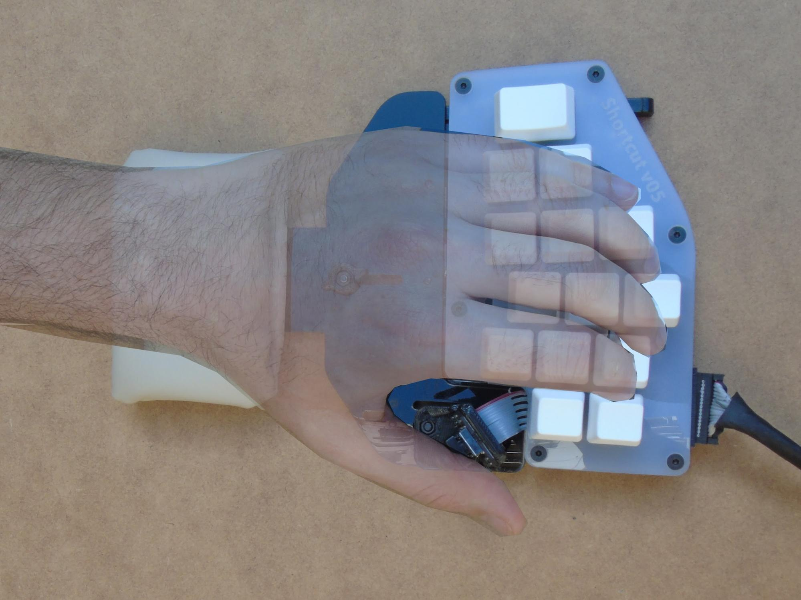

This is Part 3 of a series on ergonomics (read the Part 1 and Part 2 here) where we explained the different injuries caused by bad positions in keyboard users, and how you can prevent them by using the Shortcut.
In this article we focus on the palm rest, and the different points we have taken into consideration during the Shortcut’s design to prevent health problems and increase the user’s comfort.
Palm rest vs Wrist rest
It is good that the arm has a place to rest during typing, even it is not absolutely necessary, it strongly reduces stress in the hand and shoulder muscles. The most common solution is the use of a wrist rest, but when you use it the pressure in the wrist can cause a decrease in blood supply to the working muscles and nerves. In the case of hardcore computer users, the wrist rest use increases the pressure in the carpal tunnel and can cause some injuries, like Carpal Tunnel Syndrome.
Instead of a wrist rest, a better solution is the use of palm rests, resting only the lower part of the hand or hand heel. Comfort is similar but pressure in the median nerve is significatively reduced.
Palmrest dimensions
In the Shortcut keyboard the palm rest is adjustable and can be moved further or closer to the keyboard, so it can be adapted to different hand sizes, avoiding pressure in the wrong part of your hand.
This movement, in combination with pad height also helps to get the neutral angle in the wrist extension (as we commented in the ergonomic post Part 2), helping to get a comfortable and relaxed neutral position in both hands during typing and resting.
|
 |
|
The Shortcut palm rest is optional and can be easily pulled apart from the keyboard, if the user prefers to type without resting their hands or to save space.
Materials and geometry
Regarding the material of the palmrest, the market is full of different solutions: silicon, rigid plastic, leather, polyurethane foam, etc. None of these materials on their own can provide all the desired properties. Instead, a combination of materials is required to create a palm rest that is both comfortable and healthy.
In the Shortcut the palm rest is composed from:
Regarding the geometry, the shape of the material in contact with your palm should be designed to fit the natural curves created when the palm rests on it, gently dispersing the pressure.
Conclusions
The palm rest is a critical part of the product, in direct contact with the user’s body. It is very important that the user spends some time adjusting and validating it, on contrary can be the unexpected cause of musculoskeletal problems and discomfort either.